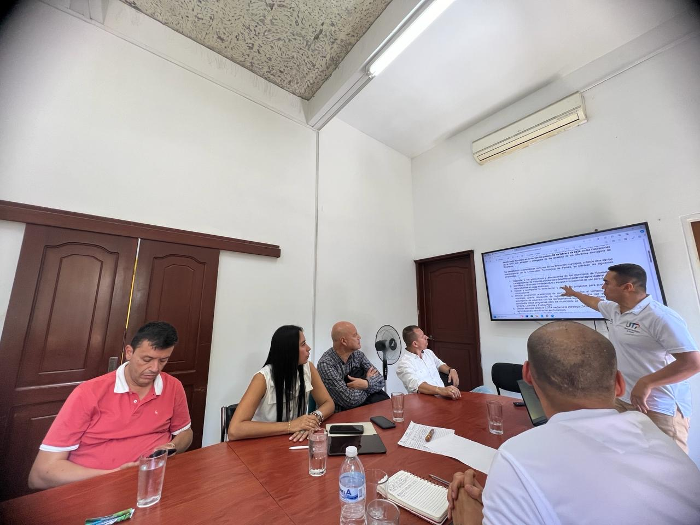

El pasado viernes 5 de abril de 2024, representantes de los Programas de Tecnología Industrial y Administración Industrial, pertenecientes a la Facultad de Tecnología, se congregaron junto al Centro de Desarrollo Tecnológico Industrial (CDTA), la Red de Nodos de Innovación, Ciencia y Tecnología, y la Secretaría Técnica de la Red Departamental de Emprendimiento en la Alcaldía de La Virginia.
Este encuentro contó con la presencia del señor Alcalde, algunos secretarios de despacho y el equipo formulador del Plan de Desarrollo, con el propósito de presentar y discutir los resultados de las necesidades identificadas desde la reunión llevada a cabo el 8 de febrero de 2024 con los funcionarios de las alcaldías participantes.
Durante la reunión, los programas académicos destacaron sus capacidades tanto en el ámbito académico como en la investigación. Asimismo, el CDTA y las redes de innovación y emprendimiento demostraron su potencial para contribuir a la estructuración de planes y proyectos estratégicos para la formulación del Plan de Desarrollo local.
Se acordó llevar a cabo nuevas reuniones en los próximos días para consolidar las propuestas presentadas y avanzar en la implementación de acciones que promuevan el desarrollo sostenible y la innovación en la región.
Esta alianza entre instituciones académicas y gubernamentales refleja un compromiso compartido por el progreso y la transformación positiva de La Virginia, promoviendo la colaboración intersectorial para abordar los desafíos y aprovechar las oportunidades de desarrollo presentes en la comunidad.